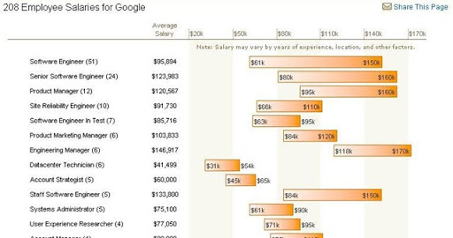

Salary surveys Web 2.0 style


Glassdoor is a new site which aims to bring the era of Wikipedia and user power to the traditional field of the salary survey. They encourage "insiders" to disclose salary levels and to rate the company and provide reviews to help others to decide whether to take that job offer. There is a give/get approach to information - you have to post your salary in order to see those from others who have already posted.